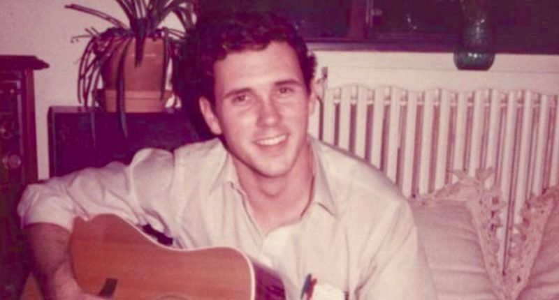

Mike Pence dumped his college fiancee for being a ‘sinner’ and narced on his beer-drinking frat bros
Author: Martin Cizmar
Published: Aug 29, 2018
...
Vice President Mike Pence was a normal teen until becoming radicalized in college, according to a new CNN profile.
Pence was a Catholic Democrat and choir boy who went away to Hanover College, where he somehow became radicalized in his Christian beliefs.
As he became more conservative and judgmental, Pence turned in brothers from his fraternity, Phi Gamma Delta, for drinking beer.
“Eventually his faith led him to reject some friends and even regard his fiancée, Karen, as a sinner whom he would have to forgive in order to marry,” the report says. “These habits of mind, later revealed in his hostility to equality for gay people and even climate science, were formed when he was barely an adult.”
Pence’s classmates say he was a “cruel” Christian who alienated former friends with his judgemental attitude.
“He was rigid, condescending and exclusionary,” said classmate Linda Koon in an interview. “You had to fit into his little pocket of Christianity, and I didn’t fit.”
Why didn’t Koon fit? Because she “couldn’t recount a dramatic come-to-Jesus tale of Christian conversion.”
“He acted like he had been struck by lightning,” Koons said. “I had just grown up in the Lutheran Church and had always been a Christian. That wasn’t good enough. He told me that wasn’t good enough, ‘God doesn’t want your kind.’ It was a very narrow view of an infinite being.”
Pence also humiliated a gay classmate who came out to him. The classmate, who spoke anonymously to CNN, “considered him a mentor” and therefore made Pence the first person he ever discussed his sexuality with.
“I went to him because I respected him. Mike told me that who I was was an abomination, and that I had to change. He also stopped being my friend,” the man said.
Pence also had issues with his fiancee, the man said.
“He told me that he needed to forgive her because she had been married before and wasn’t a virgin,” the source said. “It had taken a while for him to get there, but he had forgiven her. He couldn’t forgive me in the same way and it was a long time before I came out to anyone else.”
Pence’s moral code also allowed him to flip on his frat brothers when it suited him.
When confronted by an administrator, Pence turned his brothers in for buying a keg of beer, according to a former fraternity brother, Dan Murphy, who now teaches at Hanover,” the report said. “The school came down hard on everyone, but when Pence later sought a job in the admissions office, he got it.”